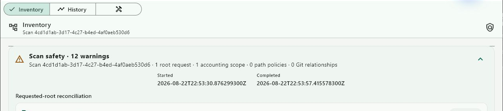

You start a scan of a large folder. A minute in, you change your mind and press Cancel. The progress disappears.
What did you just get?
Nothing, most screens would say. The scan did not finish. But something did happen: the work began, stopped and left the world in some state. “Nothing” is a claim about that state, and it is rarely checked.
Three small tools on our bench answer differently. Each treats the unhappy ending as a result of its own.
The scan that did not finish
Verstas is a prototype that looks at the workspaces on a disk and plans their cleanup. It only looks and plans; it deletes nothing. For each thing it might clean, the plan gives one of three answers: ready, review required or blocked.
In a recorded run on a synthetic tree of 240,012 files, a scan was cancelled during discovery. The desktop said so in plain words: the operation “was cancelled before finalization”. Every live progress region cleared. The inventory from the last finished scan stayed selected, instead of being replaced by half of a new one.
The finished history gained no entry for the cancelled scan. The next scan finished normally, and only its final answer replaced the earlier inventory.

The important part is what did not happen. The cancelled scan did not become a small, plausible inventory. A partial count is easy to mistake for a complete one, especially in a tool whose next step might be “clean these up”.
The step that failed
Luotsi drives Android devices from a laptop, one step at a time. When a step fails, the run does not end in a red line and silence. It writes a failure envelope: which scenario, which step, what the step was doing, the error and its kind, and the screenshot, recording and log it kept.
{
"schema": "luotsi-failure-bundle.v1",
"scenario": "view stream failure",
"status": "failed",
"failedStep": { "index": 2, "name": "watch stream", "action": "view" },
"artifacts": [
{ "kind": "screenshot", "path": "failure-screen.png", … },
{ "kind": "recording", "path": "failure-recording.mp4", … },
{ "kind": "logcat", "path": "failure-logcat.txt", … }
],
"error": {
"message": "Unexpected end of stream",
"category": "transport"
}
}A failure becomes something to read later, after the device is unplugged. “Failed at step two, watching the stream, a transport error” starts a different conversation from “it didn’t work”.
The machine that went quiet
The third tool is smaller. A relay bridge of ours connects a relay board to a message broker, so a laptop can switch its outputs. When the bridge connects, it announces that it is online. Before that, it leaves the broker a last will.
# Last will: the broker publishes this, retained,
# if the bridge disappears without a word.
self.client.will_set(
self.mqtt_status_topic,
payload=self._status_payload("offline"),
qos=1,
retain=True,
)If the bridge disappears without saying goodbye, the broker publishes “offline” on its behalf, and keeps it for anyone who asks later.
Silence would be easier to build. It is also ambiguous: quiet could mean nothing changed, or that nobody is left to say so. A retained “offline” turns a disappearance into a message with a time on it.
The last will covers only the connection. Whether a relay actually switched is a separate question. After a command, the bridge tries to read the relay’s state back from the board and reports what it read.
One habit
Three tools, three surfaces, one habit: the unhappy path leaves a receipt. The receipt is shown in the same place as success, in the same plain voice, and it does not claim more than it knows.
For any button that starts something long or destructive, there is a useful question to ask before shipping it.
What does the screen say if you stop halfway?
If the answer is “nothing”, a result is probably missing.